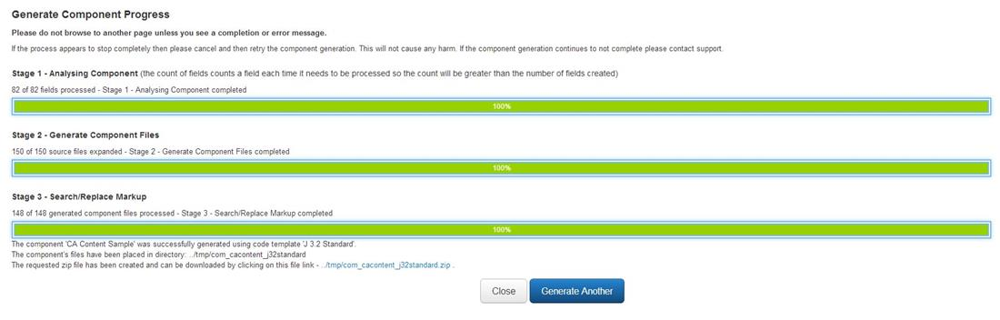

The Generate function available from the Components/Extensions List view opens this dialog where the required Component/Extension, Code Template and generation parameters for component generation can be specified.
You can use the following links to jump to a section of this help page:
A pop-up box showing all Components/Extensions. A Component/Extension must be selected for the component generation.
Modal
Select a Code Template
A pop-up box showing all Code Templates. A Code Template must be selected for the component generation.
Modal
Output Path
The relative location within the website where the folder containing the generated component files will be created. The default value is 'tmp' (this can be changed in the Component Architect Options).
Text
Zip Format
Select from the options whether to created zipped copy of the generated component folder. The default value is 'None' (this can be changed in the Component Architect Options). At the moment only creation of '.zip' files is natively supported by Joomla!.
List
Logging
Select whether to create a log file for the component generation. The default value is 'No' (this can be changed in the Component Architect Options). The location of the log files is by default the 'logs' folder (again this can be changed in the Component Architect Options).
List
Output Path
The relative location within the website where the folder containing the generated component files will be created. The default value is 'tmp' (this can be changed in the Component Architect Options).
Text
Generate
Button to initiate the generate component process. Once clicked this dialog web page will be replaced with a progress web page showing the stages of the component generation and progress in each. Any error or warning messages will be displayed and also the location of the component folder, and if specified the zip file for the component.
Whilst the component code is being generated a progress page will be constantly updated to show how complete the generation is. This page will be similar to this:
If the component generation has completed successfully then the final progress page should look like below. Note: The View Logs button will only be displayed if logging was selected for this component generation.

Close
A button to close the Generate dialog and return to Components/Extensions Manager view.
View Logs
If Logging has been selected for the component generation then once the generation of the component has completed the View Logs button will be displayed
Generate Another
A button to go back to restart the Generate dialog again to perform another component/extension generation. Useful if you need to generate with a different code template.
Install
A button to install the component/extension straight away, if you wish, using this Install button. This will use either the zip file or, if no zip file created, just the output path to install the component.
Download
If a zip file has been created then using this button you can download it straight away to your computer. If you do not download it then you will have to use ftp to do so (not though if you are on XAMPP/WAMP) or use the Joomla! Extensions/Install and install from a directory.